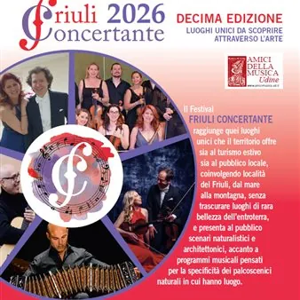

da mar 23 giu a dom 13 set
Friuli Concertante 2026
Un’unica manifestazione con 6 appuntamenti raccolti e ordinati nel programma completo.
 Indicazioni
Indicazioni
- Costi e prenotazioni
- Costo non indicato · Prenotazione non indicata
- Programma
- Programma raccolto. Gli appuntamenti delle diverse schede sono riuniti in questa pagina.
- In caso di maltempo
- Nessuna indicazione specifica pubblicata.
- Note
- Le schede dei singoli appuntamenti sono state unite nella manifestazione principale.
L’EVENTO
Descrizione completa
Ai mulini / Duo Estroverso Il Festival amici della musica FRIULI CONCERTANTE raggiunge quei luoghi unici che il territorio offre sia al turismo estivo sia al pubblico locale, coinvolgendo località del Friuli, dal mare alla montagna, senza trascurare luoghi di rara bellezza dell’entroterra, e presenta al pubblico scenari naturalistici e architettonici, accanto a programmi musicali pensati per la specifi cità dei palcoscenici naturali in cui hanno luogo. FESTIVAL DARTE escursioni info@carniagreeters.it +39.340.1609684
02.08.26 DOMENICA ore 06.00 Concerto all’Alba - Prato San Martino - Duo Salvador-Goch (vn e va)
12.09.26 SABATO ore 20.30 Pieve di San Martino / Duo Hata Palamidessi (2 chitarre)
Il Festival FRIULI CONCERTANTE raggiunge quei luoghi unici che il territorio offre sia al turismo estivo sia al pubblico locale, coinvolgendo località del Friuli, dal mare alla montagna, senza trascurare luoghi di rara bellezza dell’entroterra, e presenta al pubblico scenari naturalistici e architettonici, accanto a programmi musicali pensati per la specifi cità dei palcoscenici naturali in cui hanno luogo. 02.08.26 DOMENICA ore 06.00 Concerto all’Alba - Prato San Martino - Duo Salvador-Goch (vn e va) 12.09.26 SABATO ore 20.30 Pieve di San Martino / Duo Hata Palamidessi (2 chitarre) Programma completo in allegato Info e contatti info.amicimusica@amicimusica.ud.it | www.amicimusica.ud.it
raggiunge quei luoghi unici che il territorio offre sia al turismo estivo sia al pubblico locale,
coinvolgendo località del Friuli, dal mare alla montagna, senza trascurare luoghi di rara bellezza dell’entroterra,
e presenta al pubblico scenari naturalistici e architettonici, accanto a programmi musicali pensati per la specifi cità dei palcoscenici naturali in cui hanno luogo.
PALUZZA 05.09.26 SABATO ore 11.00 Torre Moscarda / Chiara Bignozzi (fg)
FESTIVAL DARTE escursioni info@carniagreeters.it +39.340.1609684
VILLA DI VERZEGNIS 05.09.26 SABATO ore 17.00 ‘Racconti sotto l’albero’ Duo Accordos
VILLA DI VERZEGNIS 05.09.26 SABATO ore 18.00 Chiesa di San Martino / Golden Sound Flute Ensemble
Casa Formeaso / Corazza - Della Bianca visita al Museo di Zuglio ore 15.00 (€ 4 prenotazione +39.043392562 museo.zuglio@libero.it).
Il Festival amici della musica Udine FRIULI CONCERTANTE raggiunge quei luoghi unici che il territorio offre sia al turismo estivo sia al pubblico locale, coinvolgendo località del Friuli, dal mare alla montagna, senza trascurare luoghi di rara bellezza dell’entroterra, e presenta al pubblico scenari naturalistici e architettonici, accanto a programmi musicali pensati per la specifi cità dei palcoscenici naturali in cui hanno luogo.
Casa Formeaso / Corazza - Della Bianca visita al Museo di Zuglio ore 15.00 (€ 4 prenotazione +39.043392562 museo.zuglio@libero.it). FESTIVAL DARTE escursioni info@carniagreeters.it +39.340.1609684 Il Festival amici della musica Udine FRIULI CONCERTANTE raggiunge quei luoghi unici che il territorio offre sia al turismo estivo sia al pubblico locale, coinvolgendo località del Friuli, dal mare alla montagna, senza trascurare luoghi di rara bellezza dell’entroterra, e presenta al pubblico scenari naturalistici e architettonici, accanto a programmi musicali pensati per la specifi cità dei palcoscenici naturali in cui hanno luogo.
IL PROGRAMMA
Programma e orari
Le singole date appartengono alla stessa manifestazione. Ogni sede verificata dispone delle proprie indicazioni.
Da Martedì 23 giugno a Domenica 13 settembre · Festival "Friuli Concertante" 2026
Artegna
- 02.08.26 DOMENICA ore 06.00 Concerto all’Alba - Prato San Martino - Duo Salvador-Goch (vn e va)
- 12.09.26 SABATO ore 20.30 Pieve di San Martino / Duo Hata Palamidessi (2 chitarre)
Sabato 5 settembre · Friuli Concertante
Paluzza · Torre Moscarda
- PALUZZA 05.09.26 SABATO ore 11.00 Torre Moscarda / Chiara Bignozzi (fg) FESTIVAL DARTE escursioni info@carniagreeters.it +39.340.1609684
Sabato 5 settembre · Friuli Concertante
Verzegnis · Villa di Verzengis
- VILLA DI VERZEGNIS 05.09.26 SABATO ore 17.00 ‘Racconti sotto l’albero’ Duo Accordos FESTIVAL DARTE escursioni info@carniagreeters.it +39.340.1609684
Sabato 5 settembre · Friuli Concertante
Verzegnis · Villa di Verzengis, Chiesa di San Martino
- VILLA DI VERZEGNIS 05.09.26 SABATO ore 18.00 Chiesa di San Martino / Golden Sound Flute Ensemble FESTIVAL DARTE escursioni info@carniagreeters.it +39.340.1609684
Domenica 6 settembre · Friuli Concertante
Tolmezzo · Ai mulini di Illegio
- Ai mulini / Duo Estroverso FESTIVAL DARTE escursioni info@carniagreeters.it +39.340.1609684
Domenica 6 settembre · Friuli Concertante
Zuglio · Casa Formeaso
- Casa Formeaso / Corazza - Della Bianca visita al Museo di Zuglio ore 15.00 (€ 4 prenotazione +39.043392562 museo.zuglio@libero.it). FESTIVAL DARTE escursioni info@carniagreeters.it +39.340.1609684
INFORMAZIONI UTILI
Prima di partire
- Controllare la fonte prima di partire.
ORGANIZZAZIONE